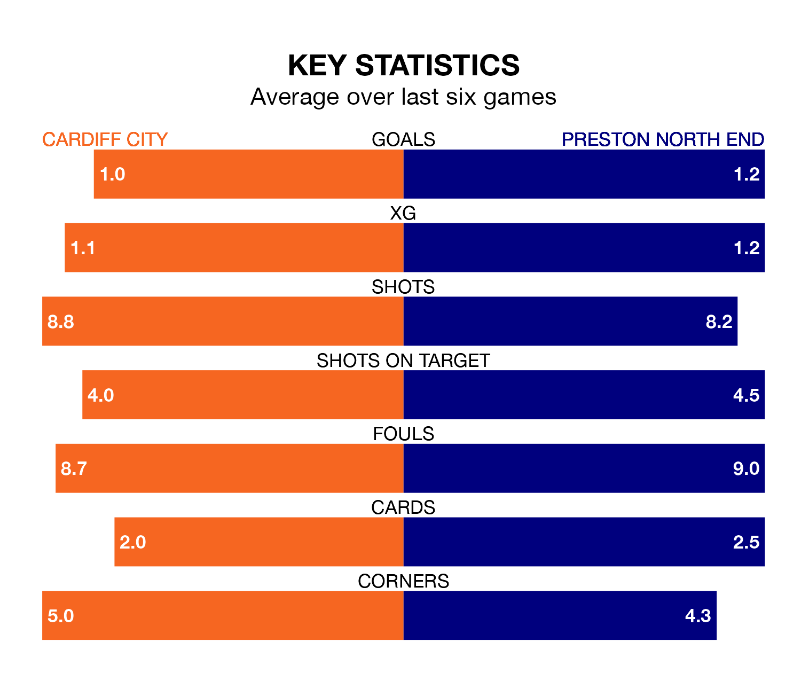

Preston North End travel to Cardiff City on Saturday in EFL Championship.
The visitors come into the game on the back of a win in their last match, having beaten Ipswich Town 3-2 at home, with two goals from Will Keane and one from George Edmundson.
The Bluebirds also won their last match, 1-0 against Watford, with their goal scored by Josh Bowler.
In the last 10 years, Cardiff and Preston have played each other on 16 occasions. Cardiff won eight of them, Preston four, and they drew four times.
On average, the Bluebirds scored 1.1 goals and the Lilywhites 0.9 in those matches.
Their last meeting was on November 25, when Cardiff won 2-1 away.
With 36 goals in 29 games so far this season, Cardiff are scoring at below the league average rate with 1.2 goals per game. But they are conceding fewer than average too, letting in 39 goals at a rate of 1.3 per game.
Preston are also below average scorers, with 1.3 goals per game, compared to a league average of 1.4. They have conceded 1.6 goals per game.
In Keane, North End have one of the league's sharpest shooters so far this season. He has notched 11 goals in 22 appearances, to sit seventh in the scoring charts.
His goal rate of one every 125 minutes is much quicker than that of Perry Ng, City's top scorer with a goal every 465 minutes, and a total of five goals in 27 games.
The Bluebirds are in mixed form in EFL Championship, with two wins and a draw from their last six games.
And also with two wins and a draw over that period, the Lilywhites' form is identical – they have both taken seven points from 18.
The away team are 10th in the table after 30 games, of which they have won 12 and drawn six, earning 42 points.
The hosts are three places behind Preston in 13th, with 12 wins and four draws putting them on 40 points.
Updated: 10:28 (UTC), 06/02/24